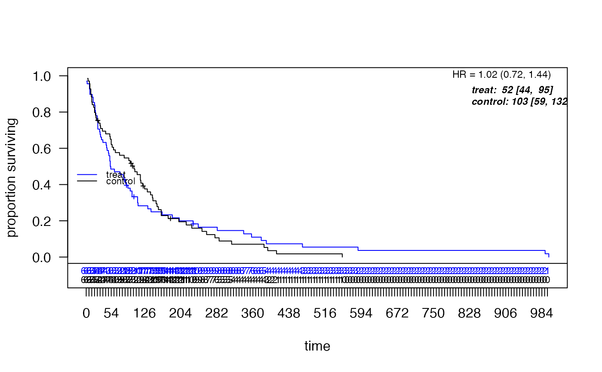

Provides functions for weighted and stratified survival analysis, including Cox proportional hazards models, weighted log-rank tests, Kaplan-Meier curves, and RMST calculations with various weighting schemes.
Main Functions
df_counting: Main function for weighted survival analysisKM_diff: Kaplan-Meier difference calculationscox_rhogamma: Weighted Cox model with flexible weightsplot_weight_schemes: Visualize weighting schemescumulative_rmst_bands: RMST analysis with confidence bands
Weighting Schemes
The package supports multiple weighting schemes for log-rank tests:
Fleming-Harrington (fh): Emphasizes early or late differences
Magirr-Burman (MB): Modest downweighting after cutoff time
Schemper: Adjusts for censoring distribution
Xu-O'Quigley (XO): Adjusts for risk set size
Custom time-based weights
Typical Workflow
Prepare data with treatment (0/1), time-to-event, and event indicator
Run
df_counting()for comprehensive analysisUse
plot_weighted_km()to visualize survival curvesCalculate survival differences with
KM_diff()Perform weighted Cox regression with
cox_rhogamma()Compute RMST with
cumulative_rmst_bands()
Key Features
Flexible weighting schemes for hypothesis testing
Resampling-based inference for improved small-sample properties
Simultaneous confidence bands for survival curves
Stratified analysis support
Weighted observations
Comprehensive diagnostic checks
References
Fleming, T. R. and Harrington, D. P. (1991). Counting Processes and Survival Analysis. Wiley.
Magirr, D. and Burman, C. F. (2019). Modestly weighted logrank tests. Statistics in Medicine, 38(20), 3782-3790.
Author
Maintainer: Larry Leon larry.leon.05@post.harvard.edu
Examples
library(survival)
str(veteran)
#> 'data.frame': 137 obs. of 8 variables:
#> $ trt : num 1 1 1 1 1 1 1 1 1 1 ...
#> $ celltype: Factor w/ 4 levels "squamous","smallcell",..: 1 1 1 1 1 1 1 1 1 1 ...
#> $ time : num 72 411 228 126 118 10 82 110 314 100 ...
#> $ status : num 1 1 1 1 1 1 1 1 1 0 ...
#> $ karno : num 60 70 60 60 70 20 40 80 50 70 ...
#> $ diagtime: num 7 5 3 9 11 5 10 29 18 6 ...
#> $ age : num 69 64 38 63 65 49 69 68 43 70 ...
#> $ prior : num 0 10 0 10 10 0 10 0 0 0 ...
veteran$treat <- as.numeric(veteran$trt) - 1
# Basic analysis
result <- df_counting(
df = veteran,
tte.name = "time",
event.name = "status",
treat.name = "treat"
)
# Plot results
plot_weighted_km(result)

# Weighted log-rank emphasizing late differences
result_fh <- df_counting(
df = veteran,
tte.name = "time",
event.name = "status",
treat.name = "treat",
scheme = "fh",
scheme_params = list(rho = 0, gamma = 1)
)